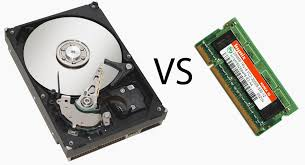
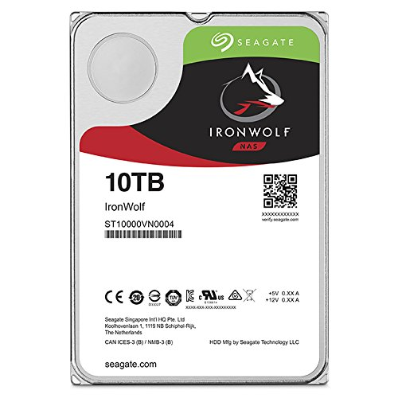
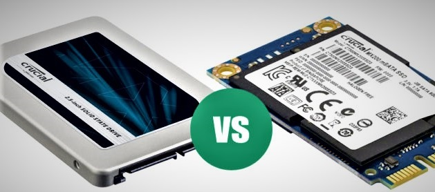

As aforementioned, the CPU and GPU both interpret and output data that is inputed by programs or the user. Some of this data may be temporary data that the computer utilizes in another program, but will not be required in the long term. This data is stored on the RAM module, which stands for Random Access Memory. The CPU has quick access to this data, and it can be utilized in a short amount of time. Data stored on RAM will delete after the computer is turned off, restarted, or the program is closed. The RAM is directly plugged into the motherboard and can range in size in different storage configurations, from 4 GB to 128 GB in one stick of RAM.
Hard Drives are the opposite of Random Access Memory as they store memory for a longer period of time than RAM. Unlike RAM, the data stored on a Hard Drive will be stored even if the computer is turned off, restarted, or the program using the data is closed. Most modern day hard drives have the ability to Read / Write data, which means that they can interpret data given to them and they can also write data onto the hard drive. Hard drives are also the cheapest way of storing data efficiently, as they can store the most amount of data reasonable price. Some hard drives have the capability of storing up to 10 TB of data.
Solid State Drives (SSD's) are similar in nature to HDDs, however, they have one key difference that sets them apart. They are by far the fastest way of reading and writing data. SSDs have the same principles in which they store data long term and the data will not be deleted unless the user specifies the data to be deleted. Some SSDs may be attached directly to the mother board, such as a M.2 variation of an SSD, or they can be plugged in through wires such as a HDD. With such speed comes a trade off, in which they cost the most out of hard drives.
| Similarities | Differences |
|---|---|
| Both have the ability to Read/Write Data | HDDs/SSDs can store data for a longer period of time |
| Both are in some way connected to the Motherboard | HDDs and SSDs can store more data than RAM |
| In conclusion both Process Data | In conclusion HDDs/SSDs can store more data and store it for a longer amount of time |